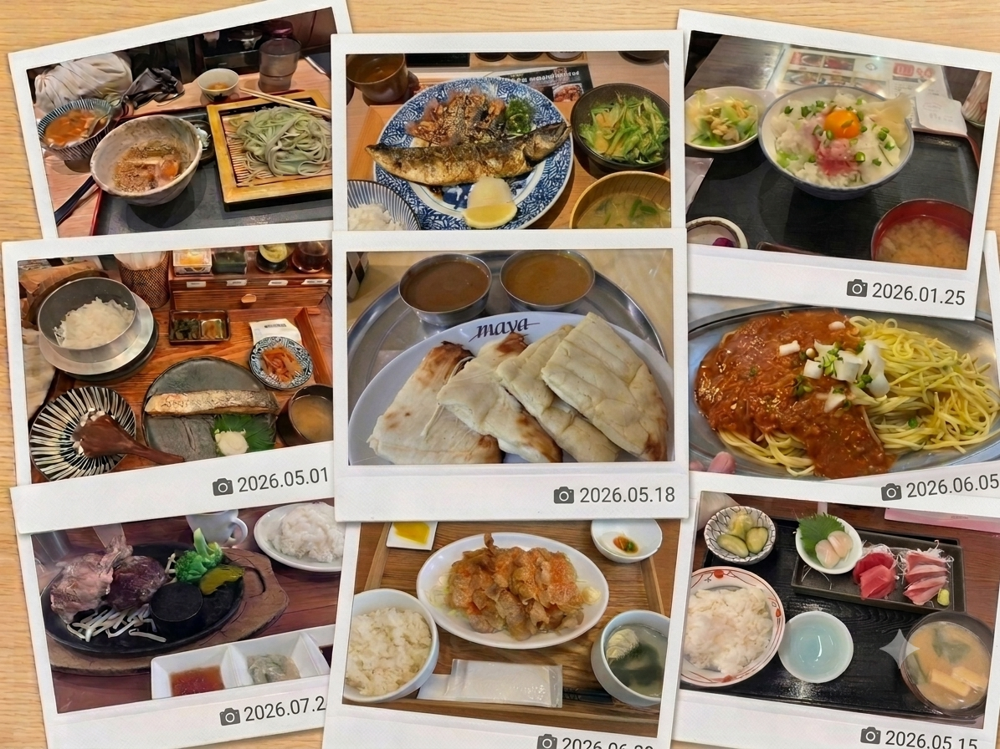
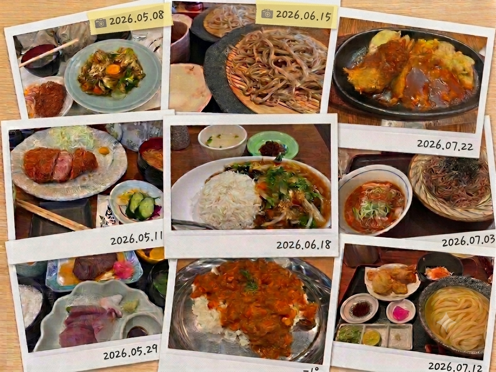
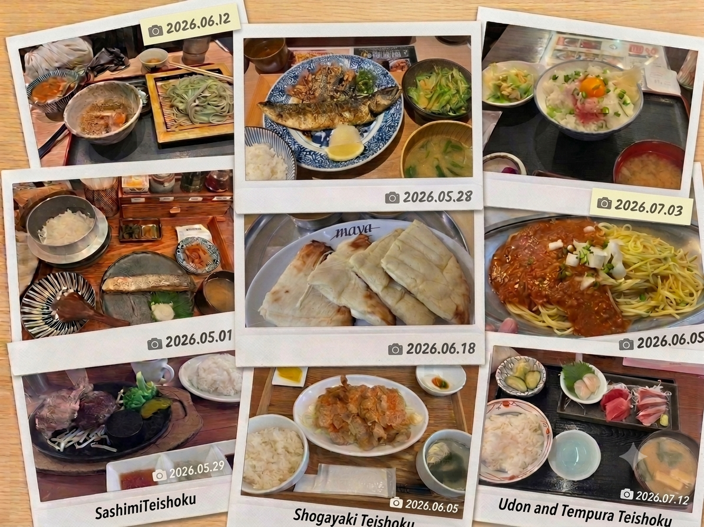

42
登録店舗
18
参加学生
326
投稿写真
411
コメント
🟢 新着レビュー（表示イメージ）
12分前 佐藤さん: キッチン谷沢を追加しました！
35分前 庄さん: 炊きたてあり〼の写真を投稿しました！
おすすめコンテンツ
このサイトの育て方
投稿方法、更新ルール、AI活用について
🚀 将来の機能拡張予定
- ✅ 検索結果の「値段順」「距離順」並び替え
- ✅ リアルタイム休業日表示（Googleカレンダー連携）
- ✅ ユーザーバッジ機能（投稿数に応じたランク付け）
🤖 AI活用について
- コンセプト・カテゴリ設計の提案
- ワイヤーフレーム・HTML/CSS生成
- キャッチコピーの作成
※すべての提案をAIと対話し、最終採用判断は自分で行いました。